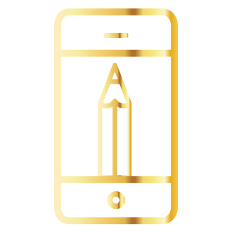

<!--
  Generated template for the TutorialPage page.

  See http://ionicframework.com/docs/components/#navigation for more info on
  Ionic pages and navigation.
-->
<ion-content padding>
  <ion-slides pager>

    <ion-slide>
      
      <h2>Crea una cuenta</h2>
    </ion-slide>
  
    <ion-slide>
      
      <h2>Seleciona el canal</h2>
    </ion-slide>
  
    <ion-slide>
      
      <h2>Dale play</h2>
    </ion-slide>
  
  </ion-slides>
</ion-content>
